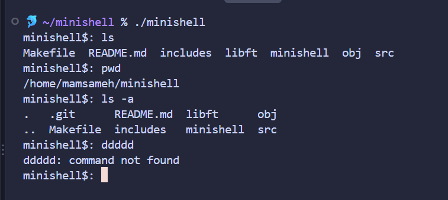
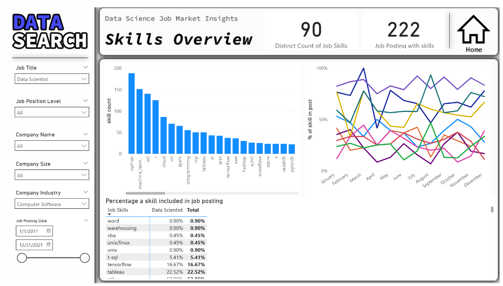
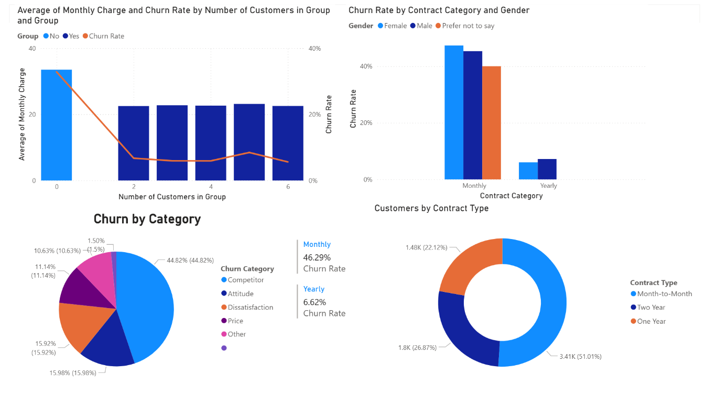

minishell
- team project.
- Bash-like shell built from scratch.
- Imitates bash.
- Handles piping, redirections, and heredoc and its signals, and custom signal handling.
- Built robust process management features.
Turning complex datasets and system logic into clean, scalable applications.
My path into tech began with a Bachelor's Degree in Data Science from Al-Balqa Applied University, where I built a strong foundation in analyzing data and uncovering insights. Eager to bridge the gap between abstract data and tangible digital products, I expanded deeply into software engineering through hands-on, rigorous project-based training at 42 Amman translating analytical logic into robust applications.
What sets my approach apart is this unique dual perspective:
I don't just write code or build web and system interfaces;
I view every project through an analytical lens.
Whether I am architecting low-level systems in C,
optimizing reporting pipelines, or crafting responsive web experiences,
I am driven by a passion to merge rigorous data thinking with reliable software
development to build solutions that are as intelligent as they are functional.


